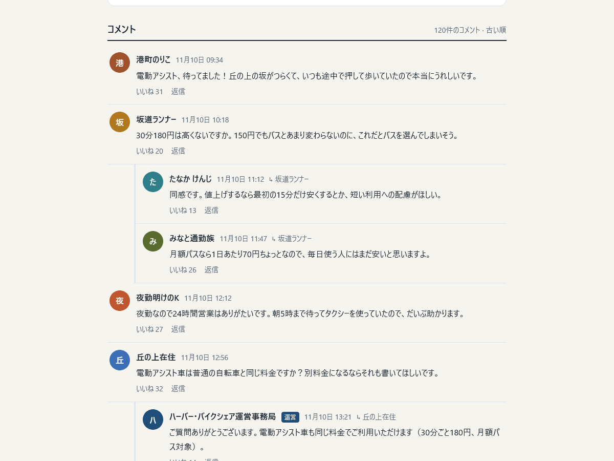
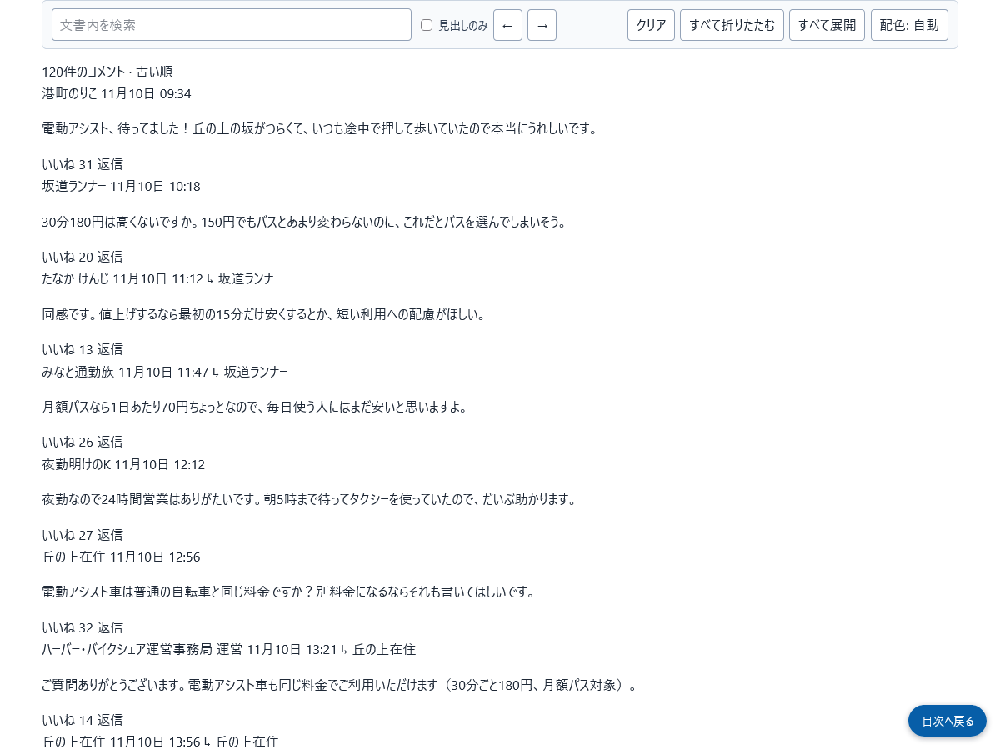

Grab All Files の実際の出力サンプル
コメント欄を最後まで読み込んで1つのHTMLに保存した結果（無料版）
下までスクロールすると続きが出てくる架空のコメント欄（約120件、返信つき）を、開いているページだけを集める設定で保存しました。拡張機能がページを最後まで自動でスクロールし、読み込まれたコメント120件をすべて1つのHTMLファイルにまとめています。見た目は「読みやすく整える」なので、元のデザインではなく本文をそろえた形で保存されます。
出力ファイル
同じ画面幅での比較


作成条件
- 元にしたページ
- /samples/source/ja/comment-thread/
- 拡張機能
- Grab All Files（5.8.53 の後の版。5.8.54 として提出予定）
- ブラウザ
- Firefox 160.0 (Windows 11, headless)
- プラン
- 無料版
- 作成日
- 2026-11-16
- 設定
- 集めるページ：開いているページ
- 見た目：読みやすく整える
- 保存の形：目次・検索付きHTML